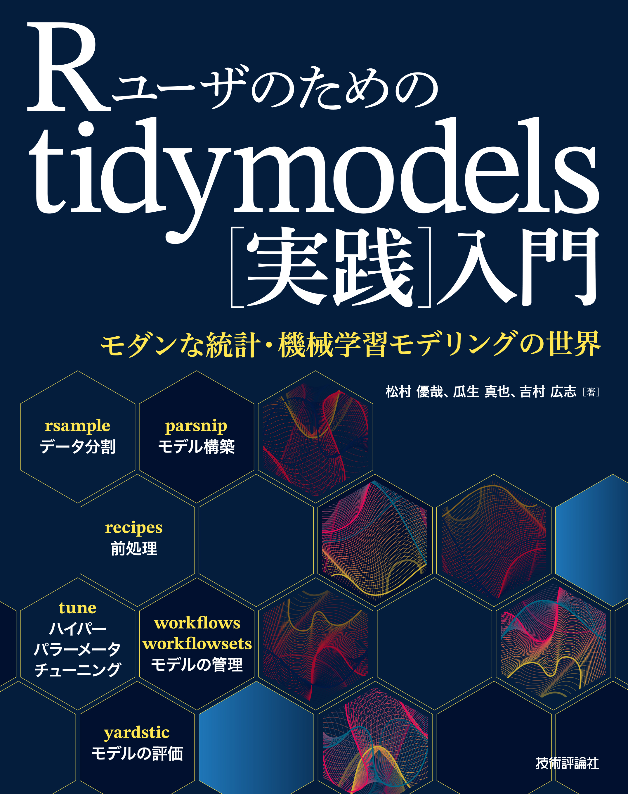
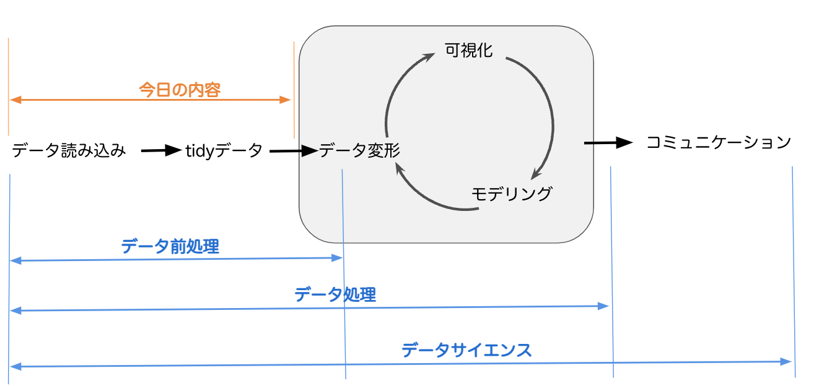
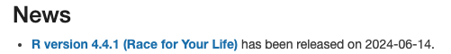
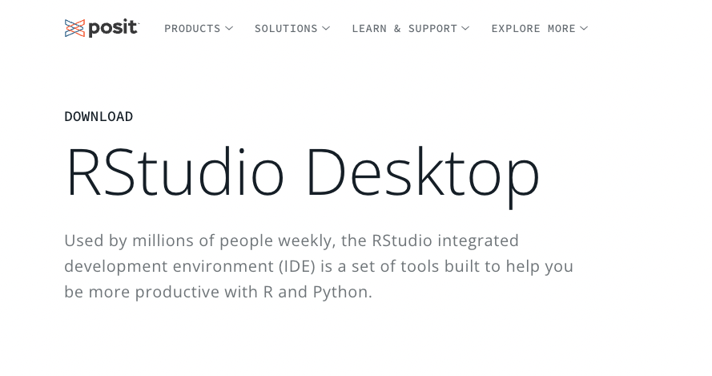
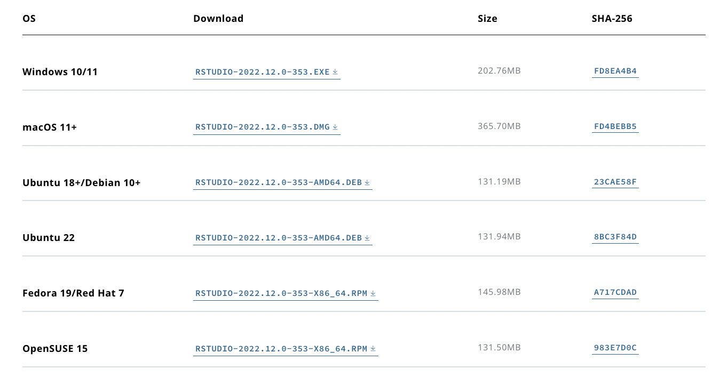

初心者セッション
R入門〜tidyverse
y__mattu
2024-07-13 TokyoR #114
はじめに
誰？
- 松村優哉
- Twitter: y__mattu
- Data Scientist
- 学生時代: 計量経済学、ベイズ統計、因果推論、マーケティング
- R歴: 10年目
- https://ymattu.github.io/
- http://y-mattu.hatenablog.com/
- Tokyo.R 運営(初心者セッションとか)

宣伝
改訂2版
R ユーザのための RStudio[実践]入門
− tidyverse
によるモダンな分析フローの世界−

宣伝2
R
ユーザのための tidymodels[実践]入門
−
モダンな統計・機械学習モデリングの世界−

この資料の目的
- R 初心者（触ったことはあるけど、なんかよくわからない）が、雰囲気を掴む
- 「自分でもできそう！」って思い込む
AI時代の初心者セッション
- ChatGPTやClaudeに聞けば、R言語でもデータ読み込み〜簡単な分析まではできる
- GitHub Copilotがあれば、tabを押していくだけでデータ読み込み〜簡単な分析まではできる
- 実際、このスライドを作ってるときもCopilotがsuggestしてくれたのでtabを押すだけで良かった場面もあった(実際は微妙に修正した)
AI時代の初心者セッション
- ただ、AIの回答が正しいかどうかは自分で判断する必要がある
- AIの回答が正しいかどうかを判断するための基礎知識
- また、「AIに聞くためのインデックス」がないとAIに聞くのも難しいので、そのインデックスを作ることが目的
Contents
- R と RStudio について
- tidyverse について
- テーブルデータの読み込み
- データハンドリング入門
注意
- 参考リンクも多いので資料は後でじっくり御覧ください。
- パッケージ名だけでも覚えて帰っていただけると嬉しいです。
データ分析の(おおまかな)流れ

RとRStudioについて
Rとは
- 統計解析およびその周辺環境に強いプログラミング言語
- データの読み込み（ローカル, Webページ, DB）
- データハンドリング
- モデリング
- 可視化
- 最近はWebアプリやAPI作成など、「プロダクションレベル」を支えられるような環境も整いつつある
- また、機械学習やディープラーニングなど、これまでPythonに優位性があった手法も多くカバーされるようになってきた
- tidymodels, keras, torchなど
- プログラミング未経験でも始めやすい(個人的な感想)
R の環境構築
- R のインストールは、CRANから、自分のOSに合ったものを。
- 2024/07/13時点の最新版は、4.4.1
- 本日の内容に関しては、4.X.X以上であれば概ね問題ないと思われます

- 3.X.X→4.X.Xの変更点
- おすすめのIDE（統合開発環境）は、RStudio
R のパッケージ
- R のパッケージを使うことで、世界中で開発されている便利な手法を使える
- パッケージに含まれている関数を呼び出すことで、様々な拡張機能を使う
- パッケージは、関数の集まり
- CRANに登録されているものは、
install.packages("パッケージ名")でインストール- 例:
install.packages("ggplot2")
- 例:
パッケージ内の関数の表記
- readr パッケージの read_csv 関数を使いたいとき
- 特に、「方法2」は関数が所属するパッケージを明示することで、あとから見たときにコードの確認がしやすかったり、他の人と共有する際に分かりやすいなど、利点が多く個人的にはおすすめ
- ただし、本資料では直感的なわかりやすさを優先し「方法1」を多く使います
RStudio
RStudioとは
- R言語のための統合開発環境（IDE）
RStudioのインストール

RStudioのインストール
- 自分の環境に合ったものをダウンロードしてインストール

tidyverse
tidyverse について
tidyverse(概念)
ざっくり:
- R でやるいろんな操作(データハンドリング、可視化、スクレイピング、分析、etc)を直感的で統一的なインターフェースでできるようになったら嬉しくない?
tidyverse パッケージ
- 上記の概念を実現するためのコアパッケージ群
install.packages("tidyverse")でインストール
tidyverse を読み込み
── Attaching core tidyverse packages ─────────────────────────────────────────────────────────────── tidyverse 2.0.0 ──
✔ dplyr 1.1.4 ✔ readr 2.1.5
✔ forcats 1.0.0 ✔ stringr 1.5.1
✔ ggplot2 3.5.1 ✔ tibble 3.2.1
✔ lubridate 1.9.3 ✔ tidyr 1.3.1
✔ purrr 1.0.2
── Conflicts ───────────────────────────────────────────────────────────────────────────────── tidyverse_conflicts() ──
✖ dplyr::filter() masks stats::filter()
✖ dplyr::lag() masks stats::lag()
ℹ Use the conflicted package (<http://conflicted.r-lib.org/>) to force all conflicts to become errors読み込まれるパッケージ
- ggplot2: 可視化
- dplyr: データの操作
- tidyr: データを tidy に
- readr: データの読み書き
- purrr: 関数型プログラミング
- stringr: 文字列の操作
- forcats: 因子型データの操作
- tibble: tibble というモダンなデータフレーム
データの読み込み
R でのデータ読み込みのベストプラクティス
- RStudio でプロジェクトを作成
- ファイルの位置が分かりやすくなります
- 様々な読み込み関数を使って読み込み
- ローカルにあるファイル(今日の内容)
- データベース(またの機会に…)
- Web スクレイピング(またの機会に…)
RStudio でプロジェクトを作成
Project → New Project

New Directory → New Project


ディレクトリ名を入力

Done!
- 読み込みの関数は、プロジェクトの中のファイルを探しにいきます。
- 書籍によっては
setwd()で作業場所をしているものもある を書いているものもありますが、RStudioプロジェクトでは必要ありません。- むしろ、RStudio プロジェクトでは非推奨
いよいよデータの読み込み
ローカルにあるファイル
csv
read.csv()
- パッケージを使わない方法
- R < 4.0.0 では
stringsAsFactors = TRUEがデフォルトになっているので、stringsAsFactors = FALSEをつけることを推奨します。
readr::read_csv()
- 高速で、列の型をいい感じにやってくれる(オススメ)
data.table::fread()
readr::read_csv()よりも高速- デフォルトでは、data.table
というデータフレームとは別の形で読み込まれるのでデータフレームがいいときは
data.table = FALSE
どれがいいのか
- 個人的には readrパッケージの
read_***()関数が一番オススメ - 速い、エンコーディング（文字化け回避）の調整が難しくない
| read.*** | read_*** | fread | |
|---|---|---|---|
| 速さ(45MB) | 3秒 | 0.8 秒 | 0.6秒 |
| 区切り値の判定ミス | × | × | △ |
| エンコーディング | ○ | ○ | △ |
xlsx, xls
エクセルファイル
エクセルファイルを読み込めるパッケージ
- xlsx
- gdata
- XLConnect
- openxlsx
- readxl → オススメ(速い、列の型をいい感じに読める)
読み込み方
文字コードの指定
エンコーディング問題
- Windows の文字コードは Shift-JIS（CP932）
- Mac の文字コードは UTF8
- Windows で作られた（日本語を含む）ファイルを Mac で読むときは
Encoding=cp932 - Mac で作られた（日本語を含む）ファイルを Windows で読むときは
Encoding=UTF8
csv を CP932 で読む
R の標準関数
readr
data.table
関数とかオプション（引数）を
覚えられない
RStudio の GUI 読み込み

RStudio の GUI 読み込み

%>%, |>
パイプ演算子
- “これまでの処理を次の関数の第 1 引数として渡す」という働き”
[1] 6例えば、以下の動作を考えてみる

どう書くのか問題

思考の流れと書く流れ

パイプ演算子を使うときのポイント
結果 <- スタート地点を書いて、やりたい処理をパイプでつないでいく- RStudioでのキーボードショートカット
- Windows:
Ctrl+Shift+M - Mac:
Cmd+Shift+M
- Windows:
1. tidy data
データの形式
２つのデータ形式(例: カテゴリごとの購買金額(千円))
Wide 型
Long 型
tidy data
- 2016 年に Hadley Wickham 氏が提唱
- 定義
- 1つの列が1つの変数を表す
- 1つの行が1つの観測を表す
- 1つのテーブルが1つのデータセットを含む
- Rでのtidy data は、Long 型。
tidyr

tidyrでの縦横変換の例
- 以下のデータを例に説明
- これは、いわゆる「横持ちのデータ」
df <- tibble::tibble("country" = c("a", "b", "c"),
"1999" = c(0.7, 0.3, 1.0),
"2000" = c(1.0, 2.0, 4.8),
"2001" = c(2.0, 5.0, 7.0))
df# A tibble: 3 × 4
country `1999` `2000` `2001`
<chr> <dbl> <dbl> <dbl>
1 a 0.7 1 2
2 b 0.3 2 5
3 c 1 4.8 7pivot_longer
- 横→縦（tidyな形）の変換
# A tibble: 9 × 3
country year amount
<chr> <chr> <dbl>
1 a 1999 0.7
2 a 2000 1
3 a 2001 2
4 b 1999 0.3
5 b 2000 2
6 b 2001 5
7 c 1999 1
8 c 2000 4.8
9 c 2001 7 pivot_longer
- 縦（tidyな形）→横の変換
- 統計解析のパッケージによっては、この形でないとうまく行かないものもある
# A tibble: 3 × 4
country `1999` `2000` `2001`
<chr> <dbl> <dbl> <dbl>
1 a 0.7 1 2
2 b 0.3 2 5
3 c 1 4.8 7このような場合でも
dat_m <- tibble::tibble(user = c('A', 'B', 'C'),
category_1 = c(10, 15, 8),
category_2 = c(2, 4, 5),
subject_1 = c(4, 5, 6),
subject_2 = c(5, 6, 7))
dat_m# A tibble: 3 × 5
user category_1 category_2 subject_1 subject_2
<chr> <dbl> <dbl> <dbl> <dbl>
1 A 10 2 4 5
2 B 15 4 5 6
3 C 8 5 6 7long型に変形可能
dat_long <- dat_m %>%
pivot_longer(cols = -user,
names_to = c("group", "num"),
names_sep = "_")
dat_long# A tibble: 12 × 4
user group num value
<chr> <chr> <chr> <dbl>
1 A category 1 10
2 A category 2 2
3 A subject 1 4
4 A subject 2 5
5 B category 1 15
6 B category 2 4
7 B subject 1 5
8 B subject 2 6
9 C category 1 8
10 C category 2 5
11 C subject 1 6
12 C subject 2 7詳しくは
Tokyo.R #79 の応用セッション を参照。
参考: tidyr (〜2019/09/11)

まとめ
Contents
- R と RStudio について
- データの読み込み
- データハンドリング事始め
- tidyverse について
- readrパッケージを用いたテーブルデータの読み込み
- dplyrの基礎
ありがとうございました
enjoy!